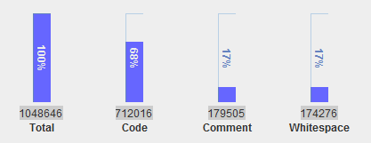

Mar 22, 2014 · 1 minute read · Comments
Games development
Don’t exactly remember how, but last night I came across Code Analyzer, an open source Java desktop utility that counts lines of code. Out of curiosity, I downloaded the runnable jar file and tried it with Libgdx.

I was very much aware that Libgdx was a pretty big project but certainly didn’t expect it to be that large. At the time of writing the HEAD of the repository contains 1.048.646 lines of Java, C and C++. 712.016 of which are actual code, 17% are comments while the rest are just whitespaces.
Not bad, huh?
Although this is obviously not a quality indicator, it shows how big of a baby it is.
There you go, your fun fact of the day.
Mar 14, 2014 · 4 minute read · Comments
ComputingGames development
Developers love Libgdx, it’s an extremely efficient, easy to use, open source, feature rich, cross platform framework. It has a huge community, and a very active repository. What’s not to love? The fact that 1.40% apps on AppBrain use Libgdx backs that up.

Have you thought about contributing back?
Who, me?
Yes and here’s why.
So much win
The beauty of a healthy community driven project such as Libgdx is that decisions are crowd-sourced and code is always peer reviewed. Although this may feel intimidating, don’t let it put you off, take it as the fantastic opportunity to learn that it actually is. The most active developers over there are talented, very talented. That’s the kind of people you want to hang out with, just so eventually, you end up absorbing some of their skills.
Personally, that’s what I do.
Some pull requests contain interesting discussions about software design and programming.
Low barrier of entry
Regardless of your level of expertise, there surely is something you can do. From maintaining the documentation to fixing that annoying old bug or introducing a small feature. All contributions are welcome. Actually, even the tiniest thing will bring you closer to the codebase and lead you to a better of understanding of it.

Everyone makes mistakes, and when that happens, people will politely point it out, giving the contributor a chance to fix it and resubmit. The community is understanding and I haven’t seen any attempts to bring shame to anyone.
This is not a League of Legends game.
Unfortunately, this is not the case for every project. We’re lucky Libgdx is full of love.
This is all lovely but what’s in it for me?
Portfolio, exposure and recognition.
At least, do it for yourself
Even from a purely selfish standpoint, there are pretty strong reasons to get involved with open source projects. Even more so if you’re a student or will be looking for a job in the foreseeable future.
Yes! I want to get into the industry!
Sorry to break the bad news for you, once you finish university you’ll be out in the wild with thousands of other employment hungry graduates. They tend to complain no one will hire them because of their lack of industry experience. See the vicious circle? Luckily enough, that’s nothing more than a bad excuse in the software industry, where the requirements to ‘make it yourself' are negligible. All it takes is a computer with an Internet connection, which I’m pretty sure you already have.
Working on personal projects that you might eventually open source is fantastic and will make you stand out. However, collaborating on a big project with other people reflects so much better on you. Companies need people to jump into projects and get the hang of it ASAP. That involves being comfortable with gigantic codebases written by people you don’t know or just met and being able to identify as well as fix the problems within it.
A big open source project gives you that education, for free. Companies will appreciate that enormously.
I’m experienced and looking for a job.
No doubt other similarly experienced people are seeking similar positions right now. You will compete against them in the hiring process. What’s going to set you apart? Exactly, going the extra mile, possibly through open source projects, being active in a community, blogging or public speaking. You get the hang of it.
How to
I guess if you’ve read this far, we agree to some degree and you might be interested in getting involved.
Good!
In order to start contributing back to Libgdx, it’s advisable to read the Contributing wiki page. Later on you should do the following.
- Clone the repository
- Check the issues and feature requests section
- Work on it
- Send a pull request
- Rinse and repeat
When in doubt, you can always ask in the forums or discuss in the #libgdx IRC channel at irc.freenode.net.
Happy coding!
Mar 11, 2014 · 4 minute read · Comments
Games development
Fix your Timestep is a fantastic article by Glenn Fiedler that explains the different ways to tick a physics simulation. Show some self-respect, go read it and check some of his other articles on physics and network code. Some might be 8 years old but still totally relevant.
Essentially, it covers different approaches to pick a delta value to pass through to the physics engine along their strengths and weaknesses. The topic is complex but has an undeniable impact on games' behaviour.
I thought it would be a good idea to show how it translates to a Libgdx application using the Box2D physics engine. Note that it also applies to Bullet, changes would be minimal.
Simple but wrong approaches
It starts with a fix time step of 1/60th of a second, which makes for a stable simulation but fails terribly when the game runs at less than 60fps, a very common situation in mobile devices.
The logical upgrade is to pass exactly how much time has passed since the last frame. Obviously, not every frame takes the same, which means the simulation could be unstable. Moreover, it will vary across devices as they can feature a wide range of specifications. This is definitely not the way to go.
Everything is lost!
Fixed timestep
If only we had the best of both worlds! A fixed timestep and a mechanism that caters for the render loop being too slow. As the article explains, the physics will always be stepped by a fixed amount, let’s say 1/60s. Some machines may be too fast and render at 120fps, so we can run the physics twice. However, others might be too slow and render at 30fps, in which case we’d only step the physics one every two frames.
What happens when the game runs at 50fps?
We need an accumulator where we can put the time spent by the renderer. Then we step the physics by a fixed amount until they sync as best as possible. There might be still be some time left, but we can save it for the next frame.
public class SionGame extends ApplicationListener {
private World world;
private double accumulator;
private double currentTime;
private float step = 1.0f / 60.0f;
public void render() {
double newTime = TimeUtils.millis() / 1000.0;
double frameTime = Math.min(newTime - currentTime, 0.25);
float deltaTime = (float)frameTime;
currentTime = newTime;
while (accumulator >= step) {
world.step(step, velIterations, posIterations);
accumulator -= step;
}
}
Fixed timestep with interpolation
The accumulator <= step condition in the while loop means we can still have some time left in the accumulator but not enough to step the physics at 1/60s. This results in some visual stuttering, as the physics can get slightly out of sync for a while. Glenn Fiedler’s suggests we interpolate our entities' transforms between the previous and current physics state based on how much time left is in the accumulator.
public class SionGame extends ApplicationListener {
private World world;
private double accumulator;
private double currentTime;
private float step = 1.0f / 60.0f;
public void render() {
double newTime = TimeUtils.millis() / 1000.0;
double frameTime = Math.min(newTime - currentTime, 0.25);
float deltaTime = (float)frameTime;
currentTime = newTime;
while (accumulator >= step) {
world.step(step, velIterations, posIterations);
accumulator -= step;
entityManager.update();
}
entityManager.interpolate(accumulator / step);
}
I entirely made EntityManager up, it simply should maintain a collection of your game entities. We assume entityManager.update() iterates over the list of game entities and updates their position and rotation according to the current physics state. On the other hand, entityManager.interpolate() should do something like the following.
public void interpolate(float alpha) {
for (Entity entity : entities) {
Transform transform = entity.getBody().getTransform();
Vector2 bodyPosition = transform.getPosition();
Vector2 position = entity.getPosition();
float angle = entity.getAngle();
float bodyAngle = transform.getRotation();
position.x = bodyPosition.x * alpha + position.x * (1.0f - alpha);
position.y = bodyPosition.y * alpha + position.x * (1.0f - alpha);
entity.setAngle(bodyAngle * alpha + angle * (1.0f - alpha));
}
}
Although it’s been simplified for the purpose of this text, the following snippet comes from SionCore.
A working sample
Libgdx community memeber, Just4phil, pointed out in the comments the advantages of using a fixed timestep with interpolation. He kindly provided a working sample that lets you switch between all approaches explained in this article. Not only that, he also linked to the source, which is really awesome. Kudos.

Again, read the original article if you haven’t done so already.
Mar 10, 2014 · 2 minute read · Comments
Games development
Today I created a repository on Gihub to keep track of my code base and I named it SionCore. This wasn’t made overnight, it’s the result of several small game projects, such as game jam gigs and Math Maze.
Slowly, it became obvious that some components were highly reusable and game agnostic. That is why I thought it would be good to make it public.
Who knows, maybe someday someone might even contribute!
This small game engine is built on top of Libgdx and Ashley among others and it’s compatible with desktop, Android and iOS platforms.
Disclaimer
SionCore is currently under heavy development, so expect constant API changes and a good deal of instability. Hopefully this one will last longer than my poorly executed previous attempts and will stabilise in a while. If that’s what floats your boat, you’re more than welcome on board.
Regardless of whether you use the whole thing or grab specific ideas, feedback is more than welcome.
Features
Currently implemented and working.
- Data driven entities
- Entity components and system collection: rendering, animation, physics.
- Localisation with automatic generation of template CSV files.
- Easy screen management
- Config files
- Data driven sprites
- Data driven physics
- Grouped asset management
- Basic state machine implementation
- Populate your Box2D world from map data
- Spine integration
- Multiple aspect ratio support
Dependencies
As of now, all the .jar files SionCore needs are included in the repository. However, switching to Gradle or Maven is something I want to get out of the way sooner rather than later.
Contributing
If you find a bug or would like a particular feature, please open an issue. On the other hand, if you want to get more involved, clone the repository and open a pull request!
Mar 10, 2014 · 1 minute read · Comments
Computing
Many Java projects use Ant to automate their build process. Libgdx, for instance, is among them. One could possibly say Ant is the Java version of Make. Targets, dependencies and other settings are defined in XML scripts.
Downloading dependencies while your machine is behind a proxy might prove problematic. Luckily enough, you can specify your proxy settings inside the Ant script.
<setproxy proxyhost="host" proxyport="port" proxypassword="password"/>
Users behind a proxy would now be able to download dependencies with Ant. More documentation about the setproxy task is available inside the official user manual.
This comes from me trying to get the Libgdx development environment in my office’s desktop. We obviously have a proxy, which put this little bump on the road.